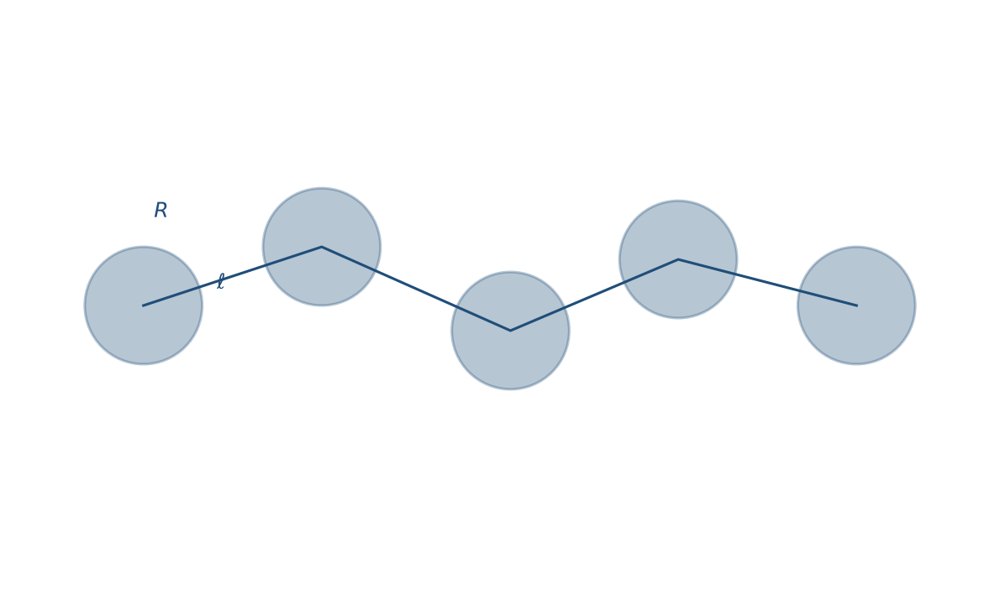
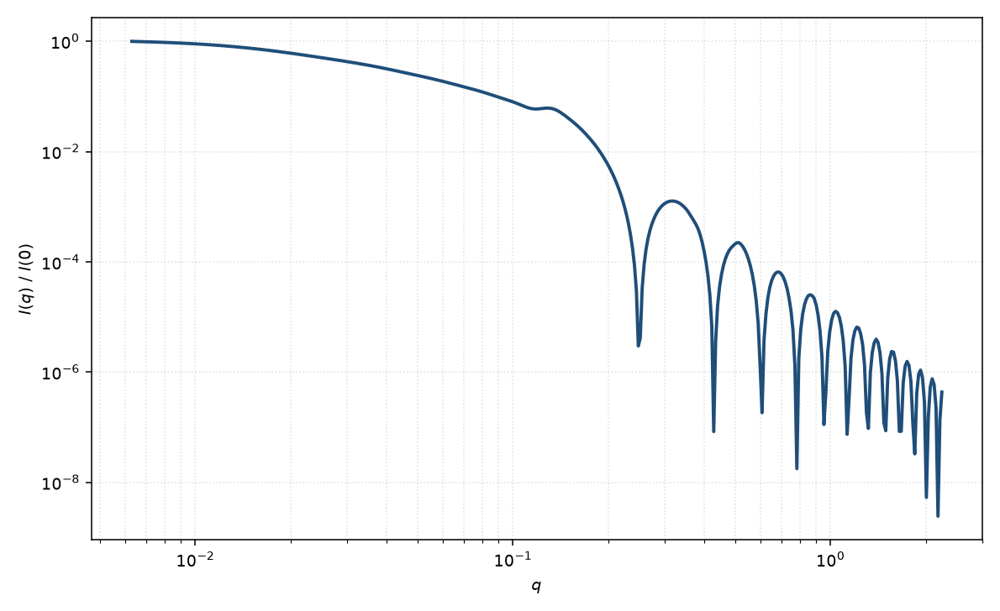

珍珠项链
pearl necklace
适用场景
珍珠项链由 $N$ 个半径 $R$ 的球珠用长度为 $\ell$ 的细杆（或无衬度间隔）连接，杆与杆之间无键角限制（可弯曲）。适用于聚电解质塌缩中间态、串珠状胶束、以及直线珍珠串无法解释低 $q$ 线圈特征的样品。
高 $q$ 看到单珠的 Rayleigh 振荡；中等 $q$ 由珠心距 $A=2R+\ell$ 的干涉决定；低 $q$ 由整链 $R_g$ 决定。杆若有显著衬度，须计入杆的振幅，不能只把珠当点。
物理图像
Schweins 与 Huber 推导了自由连接珠–杆链的粒子散射因子：珠–珠、杆–杆与珠–杆三项。相对直线串珠，取向不再锁在一条轴上，低 $q$ 更接近无规行走。
与球类「直线珍珠串」的差别就是连接的柔性：直线模型是刚性一维格子，本页允许键自由旋转。
示意图


核心公式
出发点
稀释项链的相干散射振幅是衬度对平面波相位的体积分
$$F(\mathbf{q})=\int_V \Delta\rho(\mathbf{r})\,\mathrm{e}^{i\mathbf{q}\cdot\mathbf{r}}\,\mathrm{d}^3r.$$体积分成 $N$ 个半径 $R$ 的均匀球珠与 $N-1$ 根长 $\ell$ 的连接杆。珠心距 $A=2R+\ell$。自由连接意味着相邻杆取向无规，珠–珠相位因子对取向平均后成为 $\mathrm{sinc}(qA)$ 的幂。
推导
单珠振幅是 Rayleigh 函数 $\psi(q)=\Delta\rho V_{\mathrm{s}}\Phi(qR)$，$\Phi(x)=3(\sin x-x\cos x)/x^3$，$V_{\mathrm{s}}=4\pi R^3/3$。自由连接下第 $i$、$j$ 珠的干涉
$$\bigl\langle\mathrm{e}^{i\mathbf{q}\cdot(\mathbf{R}_i-\mathbf{R}_j)}\bigr\rangle=\Bigl[\frac{\sin(qA)}{qA}\Bigr]^{|i-j|}.$$珠–珠项因此是几何级数 $S_{\mathrm{ss}}=N|\psi|^2+2|\psi|^2\sum_{k=1}^{N-1}(N-k)[\mathrm{sinc}(qA)]^k$。细杆是径向半径趋于零的短圆柱：轴向 $\mathrm{sinc}(q\ell\cos\beta/2)$ 对杆取向平均后出现正弦积分 $\mathrm{Si}$，得到杆–杆 $S_{\mathrm{rr}}$ 与珠–杆 $S_{\mathrm{sr}}$。总强度
$$P(q)\propto S_{\mathrm{ss}}(q)+S_{\mathrm{rr}}(q)+S_{\mathrm{sr}}(q).$$$N=1$ 回到均匀球；杆衬度消失时只剩 $S_{\mathrm{ss}}$。若项链被拉成刚性直线，应改用直线串珠，而不是本页的自由连接平均。
低 $q$ 与渐近
自由连接链的 $R_g^2\simeq (N-1)A^2/6$ 加上珠自身的 $3R^2/5$（$N$ 大且忽略杆粗细）。Guinier $P=1-q^2 R_g^2/3+\cdots$ 在 $qR_g\lesssim 1$ 可用。
中等 $q$ 由珠心距干涉调制；高 $q$ 看到单珠 Rayleigh 振荡，第一极小 $qR\approx 4.49$。杆很细时高 $q$ 不出现圆柱的 $J_1$ 极小。大 $q$ 珠表面给出 Porod $q^{-4}$。
参数表
| 参数 | 符号 | 含义 | 单位 | 典型范围 |
|---|---|---|---|---|
| 珠数 | $N$ | 球珠个数 | — | 3–50 |
| 珠半径 | $R$ | 均匀球珠半径 | Å | 5–80 Å |
| 杆长 | $\ell$ | 相邻珠表面间距 | Å | 0–200 Å |
| 珠 / 杆 SLD | $\rho_{\mathrm{s}},\rho_{\mathrm{r}}$ | 珠与连接段衬度 | Å$^{-2}$ | 杆常接近溶剂 |
| 标度 / 本底 | $\mathrm{scale}$, $B$ | 前置因子与本底 | 与强度单位一致 | 实验相关 |
拟合注意
$N$、$A$ 与 $R$ 在中等 $q$ 相关。珠半径由高 $q$ 第一极小约束；链尺寸由低 $q$ $R_g$ 约束。不要用 $N$ 去拟合截面振荡。
多分散：珠半径分布抹平 Rayleigh 极小；珠数或杆长分布抹平链干涉。取向：自由连接模型已是各向同性粉末；若项链被拉伸成直线，应改用直线珍珠串。
磁性：磁珠加非磁杆时，磁通道几乎只有 $S_{\mathrm{ss}}$，与核通道（含杆）不同，须分开放磁 SLD。
相近模型
参考文献
- Schweins, R.; Huber, K. Particle scattering factor of pearl necklace chains. Macromol. Symp. 2004, 211, 25–42. DOI: 10.1002/masy.200450702